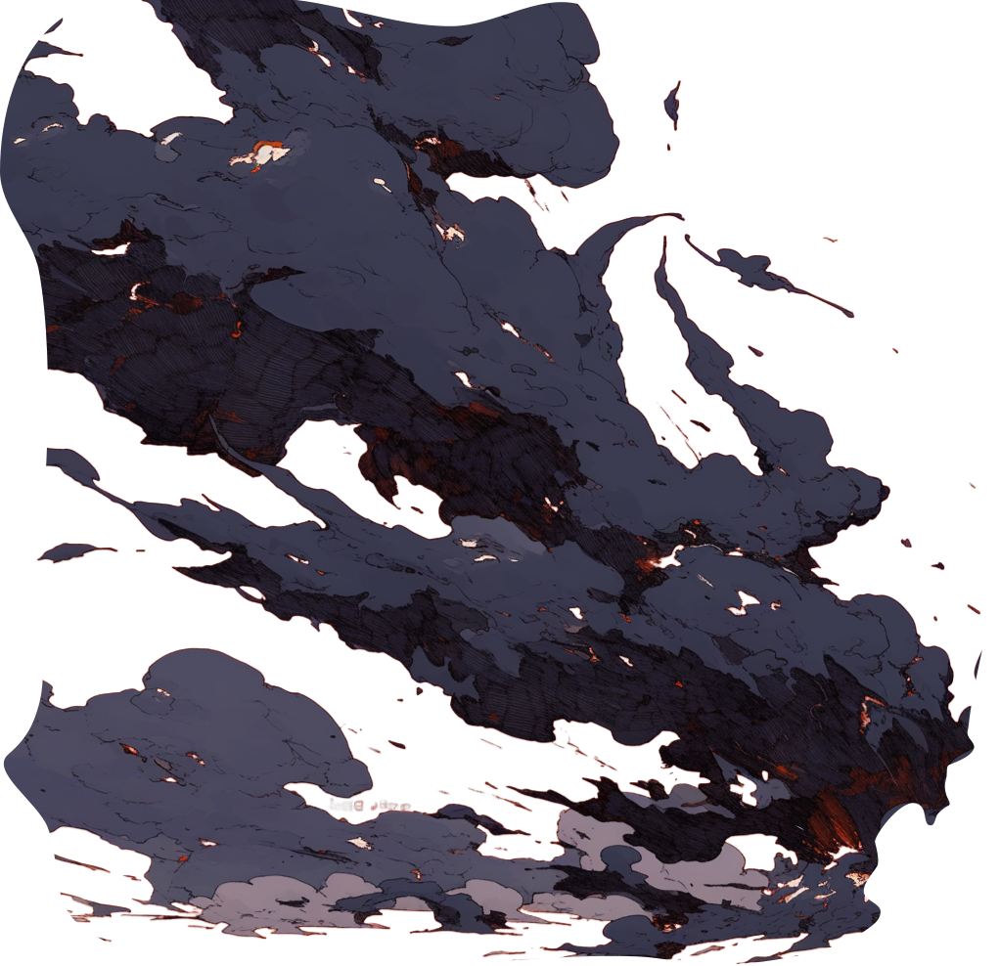
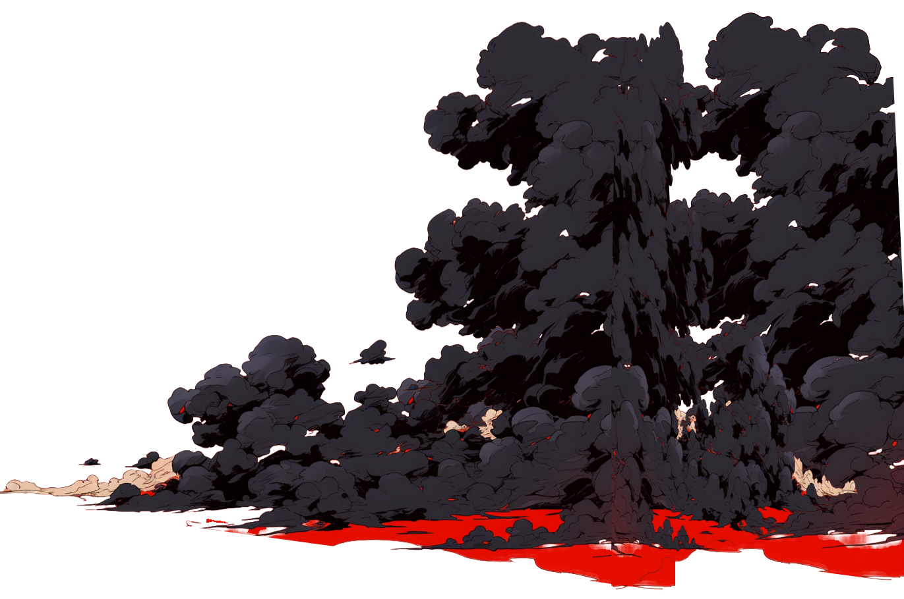
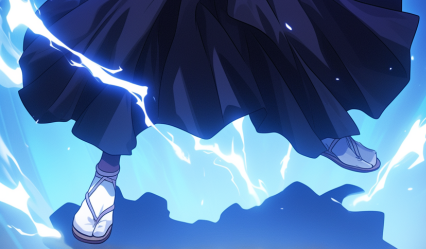

Un histoire qui transporte
« Une histoire qui vous transporte totalement. Le temps de la lecture on rentre dans les aventures du personnage. Hâte d'avoir la suite des aventures de Jaabari. »
Drey · Achat vérifié Amazon · 15 juillet 2025


5/5
4 avis vérifiés Amazon
66
pages
2
formats : broché & Kindle
Sur une île perdue au milieu de l’océan, un drame latent se déroule devant les yeux du petit Jabari.
L’île de Motoa est un territoire brisé, un lieu où les légendes et l’histoire s’entrelacent dans un voile de mystères. Jabari, un jeune garçon issu d’une lignée rejetée, grandit dans un monde qui le méprise. Pourtant, ce ne sont pas les murmures des villageois qui l’inquiètent le plus, mais les silences de son propre frère, Amani.
Quelque chose lui est caché, il le sent. Amani sait des choses qu’il refuse de lui dire. Mais pourquoi ? Quelle est cette vérité qu’on lui dissimule ?
Un événement inattendu le propulse loin de tout ce qu’il connaît. Là-bas, il découvre un passé oublié, une île qui n’est pas celle qu’on lui a décrite, et des souvenirs qui semblent flotter dans l’air comme un écho du temps. Peu à peu, il comprend que son histoire ne commence pas là où il l’a toujours cru.
Les légendes sont-elles seulement des récits pour effrayer les enfants, ou bien des fragments d’une réalité effacée ? Et si tout ce qu’il pensait savoir n’était qu’un mensonge ?
Dans cette quête initiatique, Jabari doit affronter les ombres de son passé et lever le voile sur un héritage qu’on cherche à lui cacher. Mais parfois, il vaut mieux ne pas réveiller ce qui dort depuis trop longtemps…
Un voyage captivant au cœur des mystères du passé, entre légendes et vérités enfouies, où chaque secret découvert bouleverse l’ordre établi.

Noté 5/5 sur Amazon par ses premiers lecteurs. Voir tous les avis sur Amazon
Un histoire qui transporte
« Une histoire qui vous transporte totalement. Le temps de la lecture on rentre dans les aventures du personnage. Hâte d'avoir la suite des aventures de Jaabari. »
Drey · Achat vérifié Amazon · 15 juillet 2025
Trop chouette
« Mon fils a adoré (9 ans). Il me tarde de le lire. »
Charlenetiago · Achat vérifié Amazon · 26 février 2025
Very nice story
« I like the story and it was super captivating! »
« Excellent !! » · Achat vérifié Amazon (avis original en anglais) · 2 mars 2025
Je recommande
« Superbe histoire, facile à lire. »
Danie · Achat vérifié Amazon · 7 février 2025
Jabari Kaa est un roman d'aventure accessible à un large public : son écriture immersive et son intrigue pleine de mystères séduisent aussi bien les jeunes lecteurs que les adultes.
Jabari Kaa compte 66 pages : un format qui permet une lecture immersive sans être intimidant pour les jeunes lecteurs.
Jabari Kaa est disponible sur Amazon, en version broché et en ebook Kindle.
Oui, un tome 2 est en préparation. Pour suivre son actualité, suivez l'auteur sur Instagram.
Jabari Kaa est écrit par B. Ichikawa, passionné par l'art de conter des histoires et de faire voyager ses lecteurs.
Jabari Kaa est noté 5/5 sur Amazon par ses premiers lecteurs, qui saluent une histoire captivante et facile à lire. Lire les avis.
L'aventure de Jabari continue. Pour ne rien manquer de l'actualité du tome 2 et de l'univers de Motoa, suivez l'auteur sur Instagram.
Suivre l'actualitéJabari Kaa — noté 5/5 sur Amazon
Acheter le livre